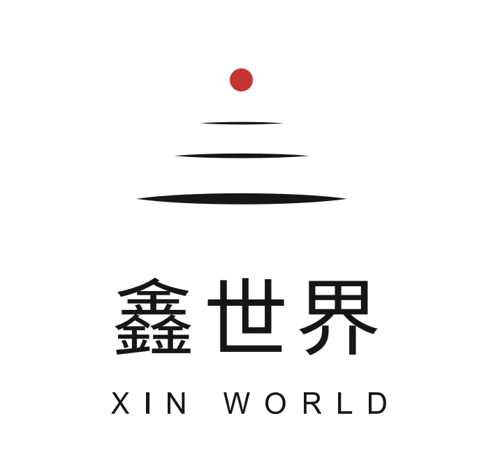

点击截图查看原始完整 PNG。桌面 1440px，手机 390px。示例数据、演示回复和本地保存，不连接正式 API。
交付状态：READY_TO_STAGE
首页与数据中台共用设计系统，48 张完整截图；定向验证结果见上方链接。仅新增独立原型目录，未覆盖正式页面、修改 API 或执行 Git 暂存与提交。文件导入仅保留名称；新建项目继续使用共享示例工作区。
手机长截图将导航临时放在整张画面底部，运行界面仍使用固定底部导航。截图采集时布局不代表浏览器视口高度。

点击截图查看原始完整 PNG。桌面 1440px，手机 390px。示例数据、演示回复和本地保存，不连接正式 API。
首页与数据中台共用设计系统，48 张完整截图；定向验证结果见上方链接。仅新增独立原型目录，未覆盖正式页面、修改 API 或执行 Git 暂存与提交。文件导入仅保留名称；新建项目继续使用共享示例工作区。
手机长截图将导航临时放在整张画面底部，运行界面仍使用固定底部导航。截图采集时布局不代表浏览器视口高度。